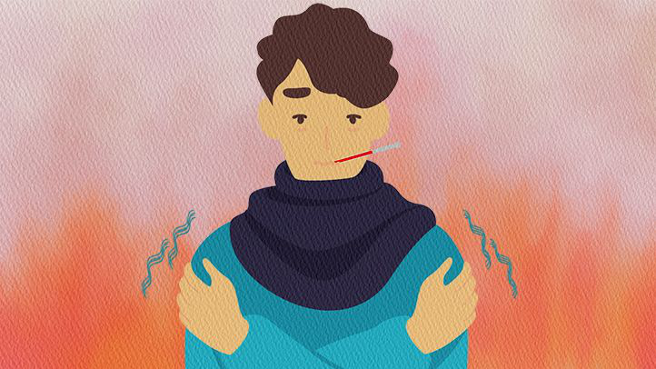
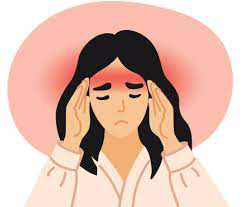

Symptoms of COVID-19
People with COVID-19 have had a wide range of symptoms reported – ranging from mild symptoms to severe illness. Symptoms may appear 2-14 days after exposure to the virus. Anyone can have mild to severe symptoms.
1st: Fever or chills
2nd: Cough
3rd: Shortness of breath or difficulty breathing
4th: Fatigue
5th: Muscle or body aches
6th: Headache
This list does not include all possible symptoms. Symptoms may change with new COVID-19 variants and can vary depending on vaccination status. CDC will continue to update this list as we learn more about COVID-19. Older adults and people who have underlying medical conditions like heart or lung disease or diabetes are at higher risk for getting very sick from COVID-19.